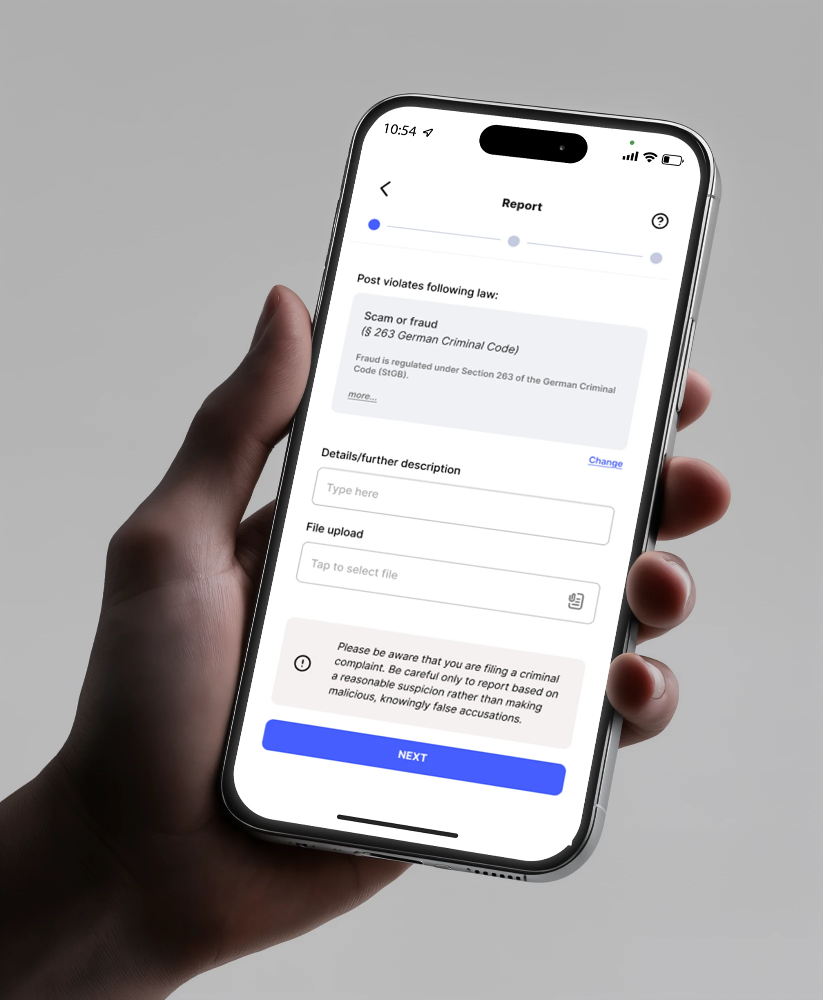
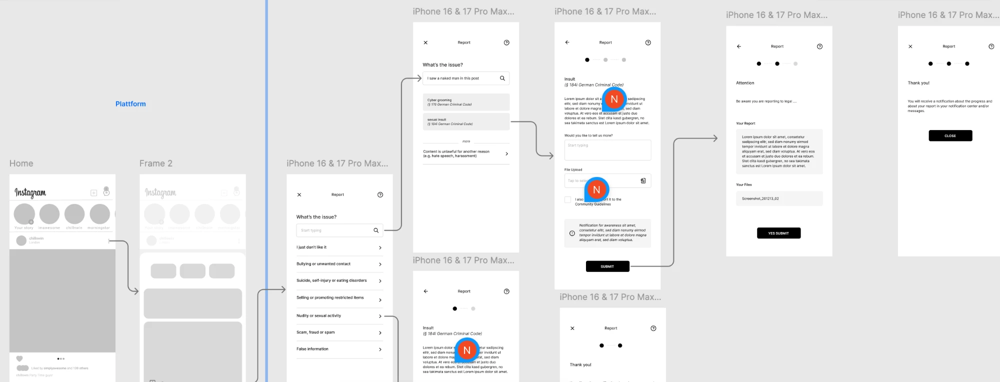
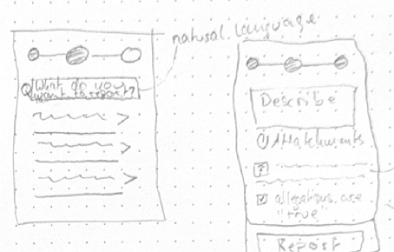
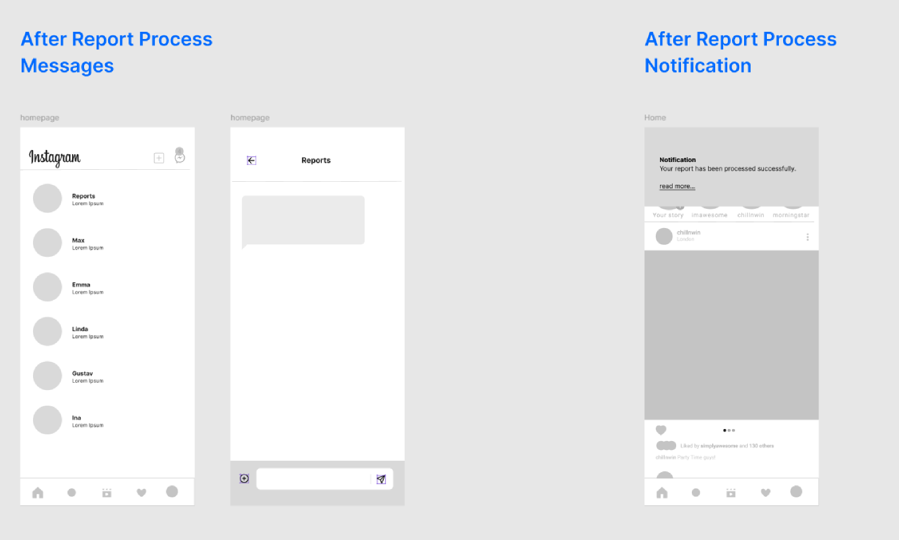
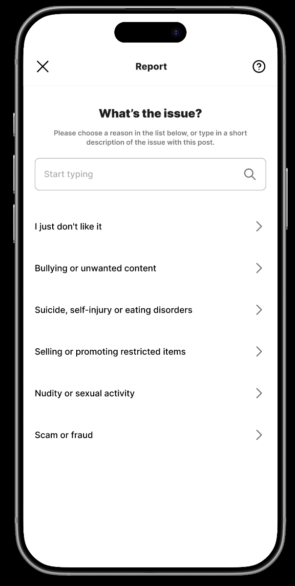
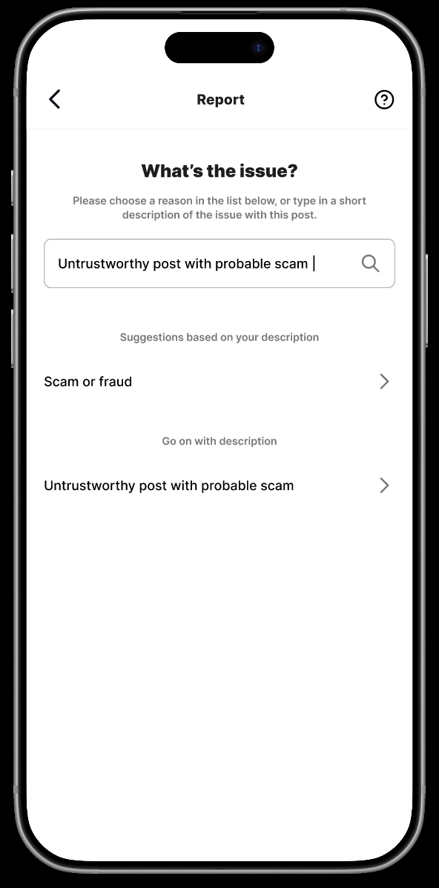
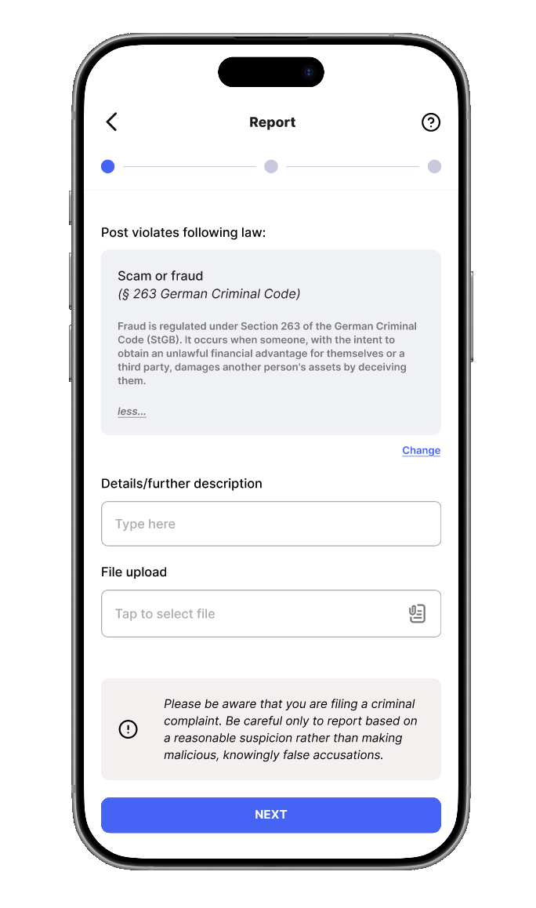
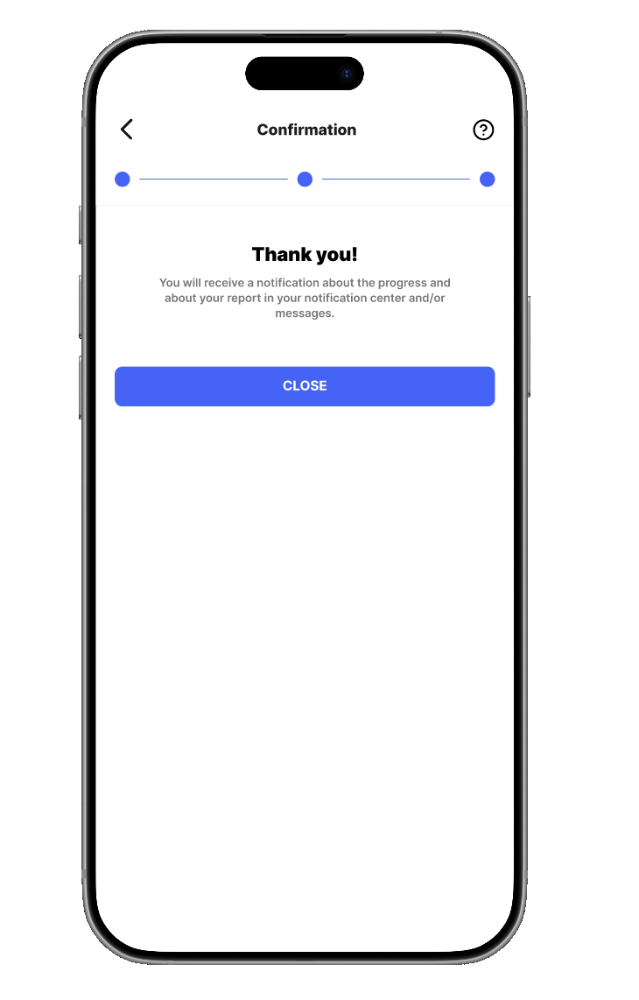
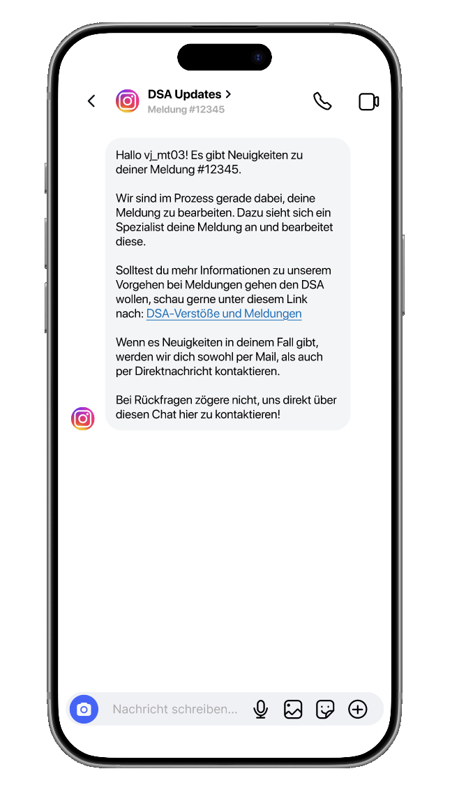
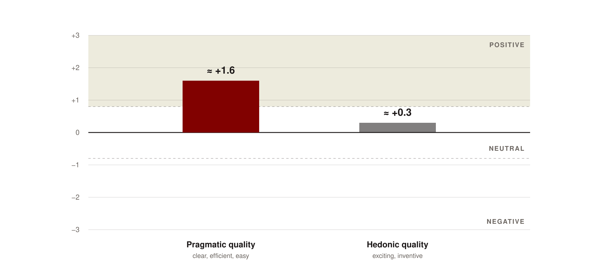

Redesigning how people report illegal content on Instagram – under the EU Digital Services Act.


01 · Overview
A legal duty, designed for people
Since the EU Digital Services Act (DSA), platforms must make reporting “easily accessible and user-friendly”. Our team of six asked what that would actually look like inside Instagram.
Over ten weeks, we researched the current reporting experience, defined a new flow, built it as an interactive Figma prototype inside a rebuilt Instagram feed and tested it with users.
I focused on UX research and the user flow, which I defined together with a teammate and which became the backbone of the prototype. I also contributed to the stakeholder analysis, the concept, the wireframes and the user tests.
02 · The challenge
Reporting is a moment of stress, not a form
Someone who reports a post has usually just seen something upsetting – or something that looks like a scam. In that moment they shouldn’t need to know whether it breaks Instagram’s rules or German criminal law. Yet the DSA treats the two differently, and existing reporting paths ask exactly that question.
At the same time, a report about illegal content isn’t a “like”. It can start a legal process. Making reporting effortless must not make it careless.
How might we let people report potentially illegal content in a few understandable steps – without knowing the law – while making clear that a report is serious and showing what happens after they send it?
03 · Research
What makes reporting hard today
We started with the DSA itself and with studies on reporting systems, compared how Instagram, YouTube, Snapchat, WhatsApp and LinkedIn handle reports, and asked social media users about their experiences.
Four insights shaped everything that followed.
01
Rules or law?
Platform rules and DSA violations follow different procedures – but for the person reporting, the difference is invisible.
02
A black box
Many people don’t know what happens after they send a report. Some platforms give no feedback at all.
03
The reporting labyrinth
Long forms, hidden functions and key options buried at the end of dropdowns discourage reporting.
04
Easy, but serious
A simpler path still has to make clear that a false accusation has consequences.
04 · Defining the flow
From insights to six steps
After the research, a teammate and I translated the insights into the user flow: the exact sequence of steps a person goes through to report an illegal post. My guiding question was where someone is most likely to get stuck or give up – and how to remove that moment.
Four principles guided the decisions:
Start where people already look.
Keep the entry point users know instead of inventing a new one.
Let people describe, not classify.
The system does the legal mapping – not the user.
Serious, not scary.
Make the legal weight clear while reporting, not as a barrier at the start.
No report into the void.
Every report gets a confirmation and a visible status.
01 · Find
Start from the post
Through the familiar three-dot menu.
02 · Describe
In your own words
Type what’s wrong, or pick from a short list.
03 · Match
Get a suggestion
Matching categories and the relevant law – or continue with your own description.
04 · Review
Check before sending
Add notes or screenshots and change anything.
05 · Confirm
Know it arrived
Clear feedback that the report was sent.
06 · Follow up
Track the status
In a pinned chat in your direct messages.


The user flow as wireframes in Figma – from the post to the thank-you screen.
05 · Ideation & wireframes
Sketching the decisions before the screens
Each of us sketched ideas for the reporting path. Two came back again and again: a search field that accepts natural language, and a progress indicator so people know how far along they are.
In the wireframes, two research insights turned into concrete interactions:
The black box became a chat.
Reports appear as a pinned chat in Instagram’s messages, with the current status always visible at the top. Nobody has to ask for an update – and users can reply if they have questions.
Rules vs. law became one flow.
Community-guideline and DSA reports share a single path. Anything reported as illegal is automatically checked against the community guidelines too, so users never choose between two systems.
Trade-off: the three-dot menu.
We discussed a more prominent report button, but kept Instagram’s existing entry: people intuitively go there when something is wrong, and it lets each platform keep control over its own UI. The redesign starts after that tap.


Early sketch: natural-language search and progress dots.


After sending: a Reports chat in messages and a notification.
06 · The solution
Reporting a scam post, step by step
Each step answers one of the research insights. These are design intentions – the test below measured the overall experience, not each decision on its own.


01 · What’s the issue?
Type a short description or choose a common reason. Most people can describe a problem – few know which category or law applies.


02 · Suggested match
From “untrustworthy post with probable scam”, the system suggests “Scam or fraud”. If nothing fits, users continue with their own words – no dead end.


03 · Details
The matched law – § 263 German Criminal Code – with a plain-language explanation, plus notes and files. A short note asks users to report only on reasonable suspicion.

04 · Review
Everything in one overview, and every part can still be changed. Fewer errors, more control over a report that may have legal consequences.


05 · Confirmation
A clear thank-you that explains what happens next – without feedback, people can’t be sure their report was sent.


06 · Status in messages
Updates arrive as a direct message in a pinned “Reports” chat, with the status always visible.
07 · Testing
Can people report a scam post without help?
We rebuilt Instagram’s home feed in Figma and placed a scam post among ordinary posts. Nine participants had one task: find the suspicious post and report it. We counted errors to see how intuitive the flow was, then used the short User Experience Questionnaire (UEQ-S) and collected qualitative feedback.
Clear and efficient.
Pragmatic quality scored clearly positive, at about +1.6 on a scale from −3 to +3 – the qualities that matter most when you report something under stress.
Familiar, not exciting.
Hedonic quality was neutral, at about +0.3. For a reporting tool, that’s fine.
One change from the feedback.
The progress indicator had only two steps, so the flow seemed to end at the review screen. We added a third step for the final confirmation, so it now shows the whole journey until the report is sent.


UEQ-S results, nine participants. Values are rounded.
What the test doesn’t show
The category suggestion was simulated: the description was pre-filled, because the prototype couldn’t process free text. The “describe it yourself” interaction is therefore not validated yet.
With nine participants, the results show tendencies, not statistically robust values – and there was no comparison with Instagram’s current flow.
08 · Beyond the report
The report doesn’t end at “Submit”
A DSA-compliant system also needs the platform side. My teammates designed a moderation dashboard concept – a queue, a detail view with priority levels, decision options and an audit trail – and a transparency report showing how reports would be summarised for authorities and the public, with mock data.
Both concepts are untested and secondary to the reporting flow.
09 · Outcome & reflection
What I’m taking with me
We delivered an interactive Figma prototype of the full reporting journey, a concept for the platform side and a first usability evaluation. The prototype shows that a legally required process can be short and understandable. It doesn’t prove that people would report more, or that the flow is legally compliant – that would need legal review and a real implementation.
Design decisions can be legal decisions.
Under the DSA, even where a report button sits has legal weight. Research on the law had to run alongside the design, not before it.
The sequence is a design decision.
Where the legal note appears – at the start or while reporting – changed the whole tone of the flow. I learned to treat the order of steps as seriously as the screens.
Test what you claim.
Our most distinctive idea, describing a problem in your own words, was the one we couldn’t really test. Next time I’d prototype the riskiest interaction first.
Write decisions down.
In a team of six, decisions made in a call got lost. I now document the reasoning behind key design decisions, so others can follow and challenge them.
with the people behind the product?